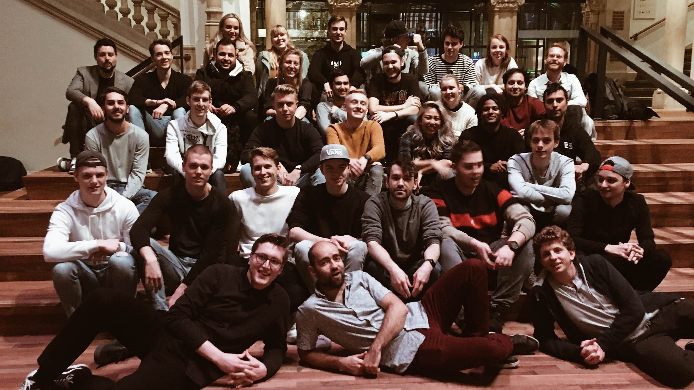
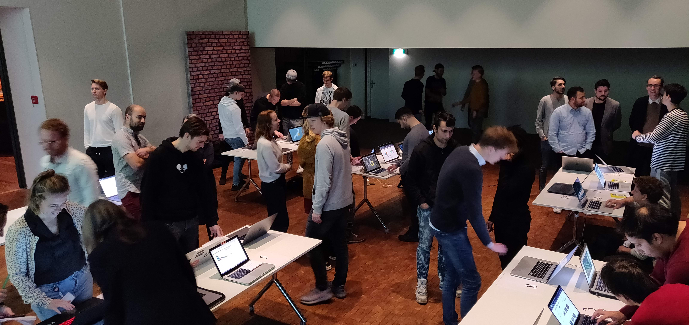

👋 We’re a tough track on web development, frontend applications, and data visualization. We’re 👩🏽🎓 students, 👷🏽♀️ industry, and 👩🏽🏫 teachers combined, in one location, where everyone learns. We start October 18th and end November 27th.
We work from 9:30 a.m. to 5:00 p.m, every work day, for six weeks, in a lab setting with 40 students and 2 teachers. Every 2 weeks a new course on a particular topic.
Students
Our students already know Bash, Git, GitHub, HTML, CSS, JavaScript, databases, Node, and npm. Not only that, they’re digital designers focussed on fixing problems for actual humans.
In this track we focus on frontend frameworks, such as React and Vue, and data visualistion, mostly with D3. This enables students to make their ideas for the web into reality. Though the subject matter is technical, attention to user experience and interaction design is, as always in our programme, stressed.
Teachers

Laurens is an all-round creative developer. He teaches at CMD Amsterdam, but also helps refugees learn new skills and prepare themselves for a new working life in CS at HackYourFuture.
Danny is an Indie Maker creating digital products for the web. He’s also an experienced teacher and lectures in almost every technical course at CMD Amsterdam. He coordinates Blok Tech in the second academic year.
Robert likes tinkering with new technology. He’s a new teacher at CMD Amsterdam and studied Information Systems at the Amsterdam university. He also does media-stuff at his own company Artaphine.
Gallery



Context
This track is given at CMDA, a human-centred digital design bachelor for frontend focussed students. CMD is part of the Faculty of Digital Media and Creative Industries at the Amsterdam University of Applied Sciences.
Showcase
@jessedijkman1 |
@rbntimes |
@timruiterkamp |
@maanlamp |
| @EyobDejene |
@SqueezyDough |
@MartijnKeesmaat |
@marissaverdonck |
Quotes
“Top notch university education combining the strengths of online and offline learning in one valuable course. By far the highest quality course I had in my studies.”
— Daan
“I learned so much […] There’s something awesome about sketching a concept of a data visualisation and then being able to build it yourself.”
— Vincent
“The course was engaging. Both novice and experienced developers were challenged, and both levels learned from each other”
— Levi
“All teachers were invested in the students progress. They worked hard on explaining concepts, giving advice and coding examples.”
— Anonymous student
“Really liked the supportive culture there was. One thing this course stands out in is the culture of collaboration. Even though we didn't work together, people were helping each other out a lot.”
— Anonymous student
Survey
The Tech-Track scores an 7.5 in the student survey!
- Students give a 4/5 on difficulty.
- Students give a 4/5 on fun.
- Students give a 4/5 on good.
- Students give a 4.5/5 on learning.